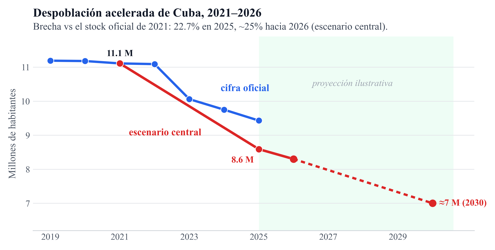
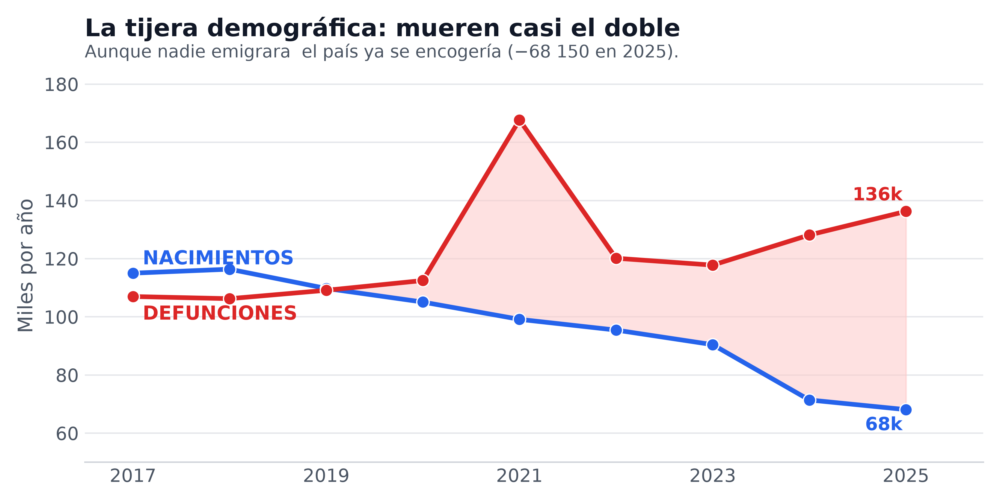
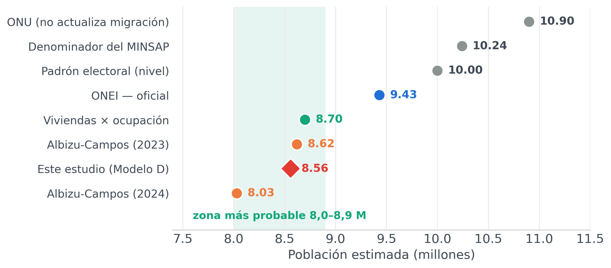
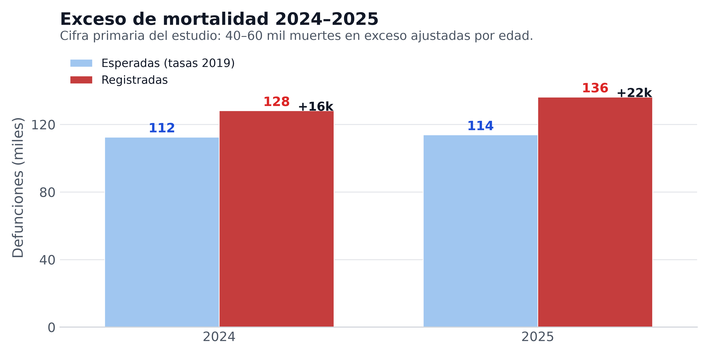
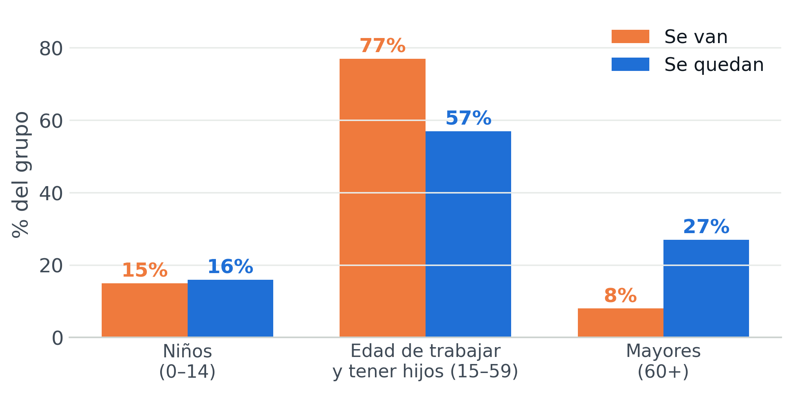
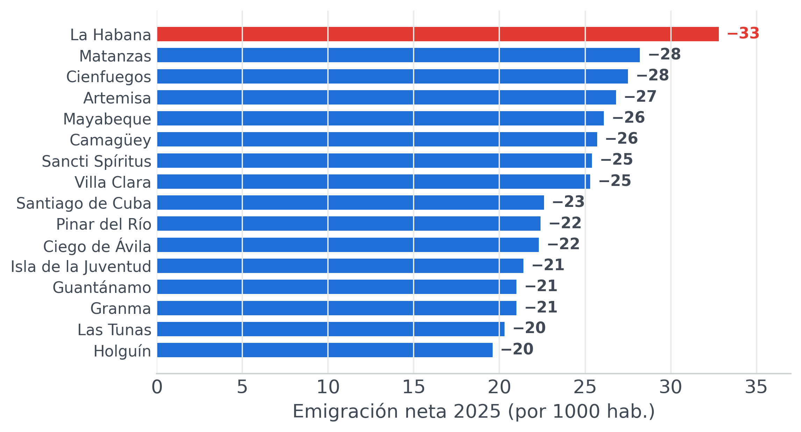

1,97–2,79 M
horquilla entre escenarios
(incertidumbre primaria)
8,58 M
escenario D fin-2025
(no estimador identificado)
2,0×
mueren el doble de personas
de las que nacen (136k vs 68k)
1,05 M
piso de destinos asentados
(EE.UU. ~800k + no-EE.UU. ~250k)
La brecha oficial vs escenarios
ONEI ≈9,43 M vs escenario D ≈8,58 M (fin-2025).

La tijera: más muertes, menos nacimientos
En 2025 mueren 2 personas por cada bebé que nace.

Ocho fuentes, banda 8,0–8,9 M
El escenario D es el estimando del estudio, no validación externa.

Residual provisional 2024–2025
Ilustrativo ~77 mil (banda 65–90 mil). No es descomposición Kitagawa.

Se van los jóvenes, se quedan los mayores
El 77% de quienes emigran tiene entre 15 y 59 años.

El vaciamiento es nacional
Todas las provincias pierden; La Habana va primero.
